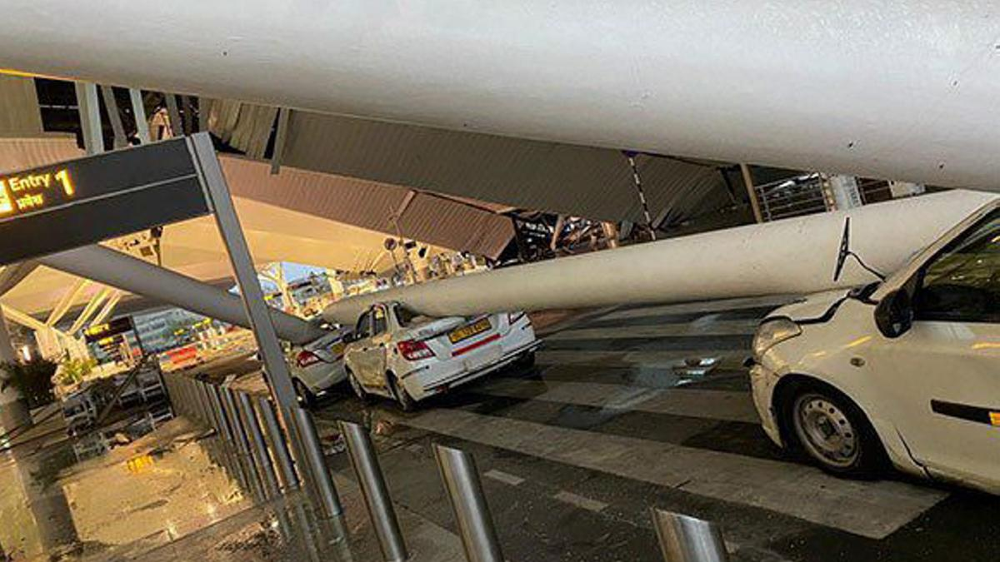

In a tragic turn of events early Friday morning, a portion of the roof at Delhi airport’s Terminal 1 collapsed, resulting in the deaths of three people and injuries to six others. The collapse, which occurred amidst heavy rains, has raised serious concerns about infrastructure safety and emergency preparedness at one of India’s busiest airports.
According to Delhi Fire Services (DFS) officials, the incident happened around 5:00 a.m. when the roof, along with its support beams, fell onto cars parked in the pick-up and drop area. Among the damaged vehicles were several taxis, leading to further chaos and damage. A search operation is currently underway to ensure that no one else is trapped under the debris.
Three fire tenders were dispatched to the scene following a distress call received by DFS at approximately 5:30 a.m. One of the injured was rescued from a car that had been crushed by an iron beam. All injured individuals have been hospitalized and are receiving medical care.
An airport spokesperson confirmed the incident, stating, “Due to heavy rain since early this morning, a portion of the canopy at the old Departure forecourt of Delhi Airport’s Terminal 1 collapsed around 5 a.m. There are injuries reported, and emergency personnel are working to provide all necessary assistance and medical aid to those affected. As a result of this incident, all departures from Terminal 1 are temporarily suspended, and check-in counters are closed as a safety measure. We sincerely regret this disruption and apologize for any inconvenience caused.”
Civil Aviation Minister K. Rammohan Naidu took to social media platform X to provide updates on the situation. He stated, “Personally monitoring the roof collapse incident at T1 Delhi Airport. First responders are working at the site. Also advised the airlines to assist all affected passengers at T1. The injured have been evacuated to hospital. Rescue operations are still ongoing.”
This incident has sparked outrage among the public, who are questioning the accountability and efficiency of the current administration. The BJP government is under intense scrutiny, especially in light of numerous infrastructure failures and mishandling of crucial situations.
This disaster is not an isolated incident. Just recently, the BJP boasted about the construction of the Ayodhya Ram Mandir, claiming it would stand strong for over 1500 years. However, the temple's walls began to show signs of water damage within the first rainfall, with its ceiling leaking and nearby roads collapsing due to poor drainage systems. These instances of failed infrastructure have only added to the public's growing frustration with the government’s competency.
The ongoing NEET and UGC-NET exam controversies, with allegations of paper leaks and corruption, further tarnish the government's image. With several exams being canceled and scandals erupting, students' futures are being jeopardized. Adding to this, frequent terrorist attacks have created an environment of fear and instability. It seems that the BJP government is failing on multiple fronts, unable to ensure the safety, security, and well-being of its citizens.
The electorate is becoming increasingly disillusioned with the current administration's failures. As the 2024 elections approach, there is a palpable sense of urgency for change. The continuous pattern of negligence and corruption is driving people to demand better governance and accountability.
The roof collapse at Delhi airport’s Terminal 1 is a tragic reminder of the serious lapses in infrastructure safety and emergency preparedness. It is a call to action for the government to prioritize the well-being of its citizens over political gains and ensure that such incidents are prevented in the future.
At Collegers, we are committed to uncovering the truth and holding those in power accountable. Stay informed and join us in demanding justice and better governance.
Visit our website collegers.in and follow us on Instagram, Twitter, and Facebook for more updates.
Together, we can make a difference.
~ Collegers
"Truth Uncovered, Reality Restored."